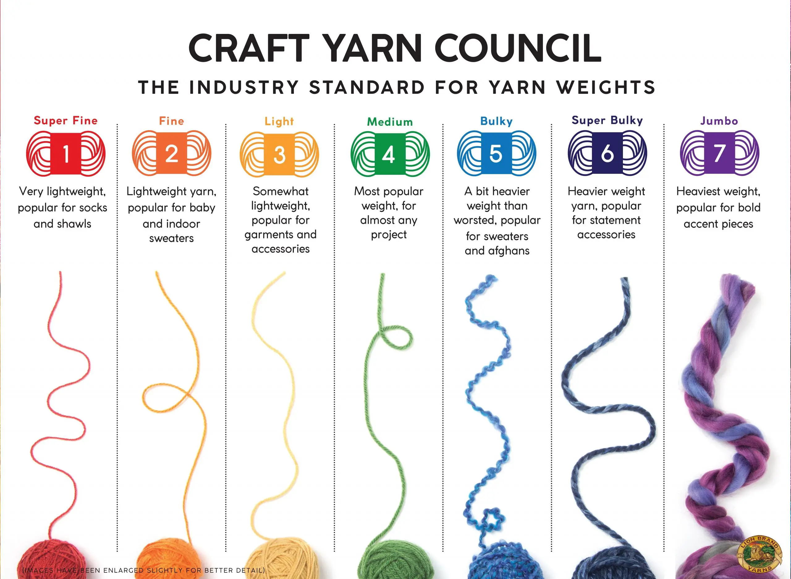
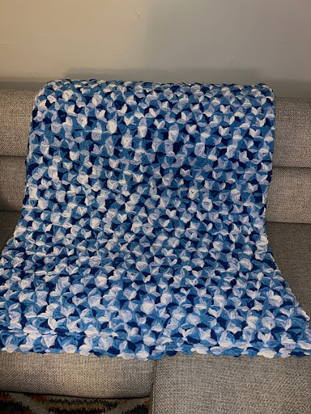

Fiber arts is a form of art in relation to to creating pieces using materials such as yarn or fabric. I will be primarily speaking about the yarn side of fiber arts because I am personally accoustomed to this. I dabble in crochet and knitting in my free time. Fiber arts tends to use more synthetic materials because it is cheaper to produce and buy. You can however get 100% cotton or bamboo yarns at reasonable prices.
Something important to familiarize yourself with are the different types of yarn weights and the sizes of hooks/needles. There are several yarn types as well as "weights". weights are what we refer to the thickness the yarn is. It can also come in different styles to fit all types of projects in colors and textures. The different needle sized are measured in millimeters (mm).
 | Metric | US | US# | UK/Canada |
| 2.25mm | B | 1 | 13 |
| 2.75mm | C | 2 | 12 |
| 3mm | - | - | 10 |
| 3.25mm | D | 3 | - |
| 3.5mm | E | 4 | 9 |
| 3.75mm | F | 5 | - |
| 4mm | G | 6 | 8 |
| 4.5mm | - | 7 | 7 |
| 5mm | H | 8 | 6 |
| 5.5mm | I | 9 | 5 |
| 6mm | J | 10 | 4 |
| 6.5mm | K | 10.5 | 3 |
| 7mm | - | - | 2 |
| 8mm | L | 11 | 0 |
| 9mm | M | 13 | 00 |
| 10mm | N | 15 | 000 |
| 12mm | P | 16 | - |
| 20mm | S | - | - |
I buy most to all of my crocket and knitting tools form Hobby Lobby and Michaels.